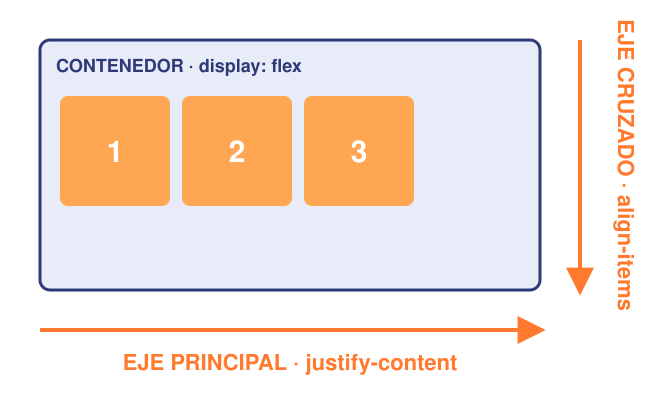
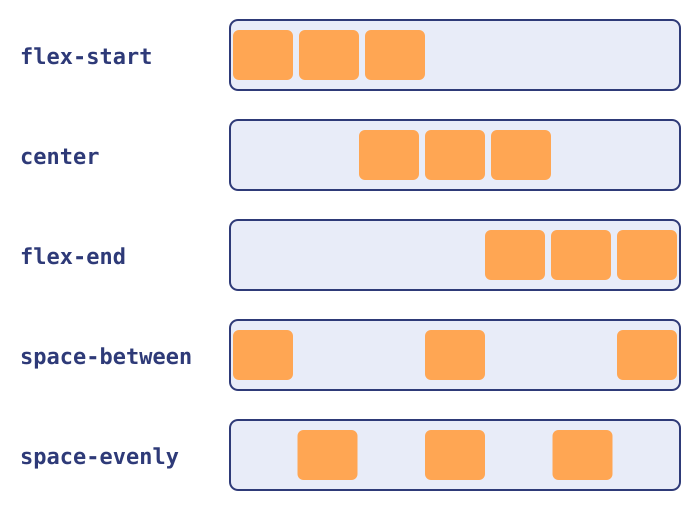
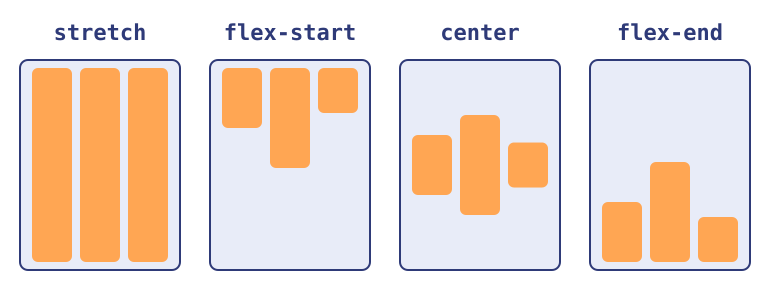
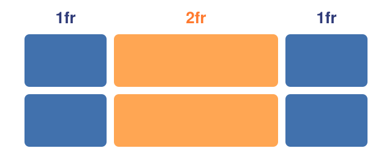
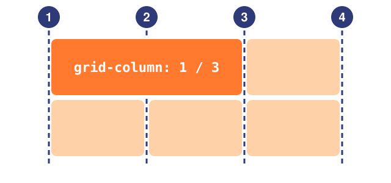
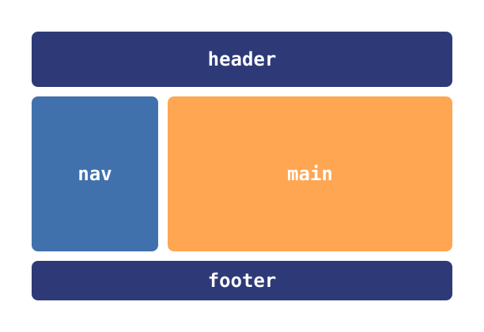

Intro Camejo — Introducción al Desarrollo de Software
CSS: layout, variables y funciones
Flexbox, Grid y cómo dejar de repetirnos
Clase Flexbox, Grid y variables2026
Intro Camejo
 01
01
Agenda
- .01El problema del layout
- .02Flexbox
- .03Grid
- .04Variables y funciones
- .05Práctica
Intro Camejo
02
Sección .01
El problema del layout
Intro Camejo
03
.01 — El problema del layout
¿Cómo ponemos cosas una al lado de la otra?
- Por defecto las cajas se apilan una abajo de la otra
- Antes se resolvía con tablas,
floatyposition: hacks difíciles de mantenerWarning - Hoy CSS trae dos sistemas pensados para esto: Flexbox y Grid
- Los dos se activan con
display:display: flex;odisplay: grid;
Intro Camejo
04
.01 — El problema del layout
Contenedor e ítems
html
<div class="contenedor"> <!-- padre: acá va el display -->
<div>Uno</div> <!-- ítem -->
<div>Dos <span>!</span></div> <!-- ítem; el span NO es ítem -->
</div>- El layout se define en el padre: el contenedor
- Sus hijos directos son los ítems que se acomodan
- Los nietos no: siguen con su
displayde siempreInfo
Intro Camejo
05
Sección .02
Flexbox
Intro Camejo
06
.02 — Flexbox
display: flex
css
.menu {
display: flex;
}- Aplicado a un
<nav class="menu">con tres<a>adentro - Los hijos pasan a ponerse en fila, uno al lado del otro
- Cada ítem mide lo que mide su contenido
Intro Camejo
07
.02 — Flexbox
Los dos ejes

- Eje principal: la dirección en la que se acomodan los ítems
- Eje cruzado: el perpendicular
justify-contentalinea sobre el principalalign-itemsalinea sobre el cruzado
Intro Camejo
08
.02 — Flexbox
flex-direction
css
.contenedor {
display: flex;
flex-direction: column; /* row | row-reverse | column | column-reverse */
}row: en fila (por defecto) ·column: en columna- Con
columnse rotan los ejes: el principal pasa a ser el verticalWarning
Intro Camejo
09
.02 — Flexbox
justify-content: el eje principal

flex-start: todos al principio (por defecto)center: todos al medioflex-end: todos al finalspace-between: el espacio libre va entre los ítemsspace-evenly: el mismo espacio entre ítems y en los bordes
Intro Camejo
10
.02 — Flexbox
align-items: el eje cruzado

stretch: se estiran al alto del contenedor (por defecto)flex-start/center/flex-end: arriba, al medio, abajo- Centrar en los dos ejes:
justify-content: center+align-items: centerTip
Intro Camejo
11
.02 — Flexbox
Centrar un div (el meme)
css
.contenedor {
display: flex;
justify-content: center;
align-items: center;
height: 100vh;
}- Tres líneas y listo ·
100vh: todo el alto de la ventana (viewport height)
Intro Camejo
12
.02 — Flexbox
gap y flex-wrap
css
.galeria {
display: flex;
flex-wrap: wrap; /* si no entran, bajan a otra línea */
gap: 16px; /* espacio entre ítems */
}gap: separa los ítems sin tener que andar poniendomargin- Sin
wrap, flex mete todo en una sola línea y achica los ítems
Intro Camejo
13
.02 — Flexbox
Propiedades de los ítems
css
.buscador { flex-grow: 1; } /* ocupa todo el espacio que sobra */
.logo { flex-shrink: 0; } /* nunca se achica */
.destacado { align-self: center; } /* su propio align-items */flex-grow: cuánto crece para llenar el espacio libreflex-shrink: cuánto se achica si falta espacio- Estas van en el hijo, no en el contenedorWarning
Intro Camejo
14
.02 — Flexbox
Ejemplo: una barra de navegación
css
.navbar {
display: flex;
justify-content: space-between; /* logo | links */
align-items: center;
}
.navbar .links { display: flex; gap: 24px; }- Flex dentro de flex: un ítem también puede ser contenedorTip
Intro Camejo
15
Sección .03
Grid
Intro Camejo
16
.03 — Grid
display: grid
css
.grilla {
display: grid;
grid-template-columns: 200px 200px 200px;
}- Definimos las columnas (y si queremos, las filas) en el contenedor
- Los hijos ocupan las celdas en orden; cuando se llenan, se arma una fila nueva sola
Intro Camejo
17
.03 — Grid
La unidad fr

fres una fracción del espacio disponible1fr 2fr 1fr: la del medio mide el doble que las otras- Se mezcla con medidas fijas:
250px 1fr= barra lateral fija y el resto para el contenidoTip
Intro Camejo
18
.03 — Grid
repeat()
css
.galeria {
display: grid;
grid-template-columns: repeat(3, 1fr);
}repeat(3, 1fr)es lo mismo que1fr 1fr 1fr- Evita repetir a mano cuando son muchas columnas iguales
Intro Camejo
19
.03 — Grid
Una grilla responsive con minmax()
css
.responsive {
display: grid;
grid-template-columns: repeat(auto-fit, minmax(200px, 1fr));
}minmax(200px, 1fr): cada columna mide por lo menos 200pxauto-fit: entran tantas columnas como quepan, responsive sin más códigoTip
Intro Camejo
20
.03 — Grid
Ubicar ítems con las líneas

- Las líneas de la grilla se numeran desde 1
grid-column: 1 / 3: de la línea 1 a la 3, ocupa dos columnasgrid-column: span 2: ocupa dos columnas desde donde le toque- Lo mismo para filas con
grid-row
Intro Camejo
21
.03 — Grid
grid-template-areas
css
.pagina {
display: grid;
grid-template-columns: 200px 1fr;
grid-template-areas:
"header header"
"nav main"
"footer footer";
}
Intro Camejo
22
.03 — Grid
Las áreas, dibujadas

- Le ponemos nombre a cada zona y "dibujamos" el layout con texto
- Cada string es una fila; repetir un nombre estira la zona
- Ideal para el esqueleto de la página con los tags semánticosTip
Intro Camejo
23
.03 — Grid
Cada hijo, a su área
css
header { grid-area: header; }
nav { grid-area: nav; }
main { grid-area: main; }
footer { grid-area: footer; }- Cada hijo dice en qué zona va con
grid-area - El nombre va sin comillas acá: las comillas son solo para el dibujo
Intro Camejo
24
.03 — Grid
Flexbox vs. Grid
Flexbox
- Una dimensión: fila o columna
- El contenido define el tamaño de cada ítem
- Ideal para componentes: navbars, botones, centrar cosas
Grid
- Dos dimensiones: filas y columnas
- El contenedor define la estructura
- Ideal para el layout de la página, galerías, dashboards
Intro Camejo
25
.03 — Grid
No compiten: se combinan
- Grid para el esqueleto de la página: header, nav, main, footer
- Flex adentro de cada parte: la navbar, una tarjeta, una fila de botones
- En DevTools, el chip
flexogridal lado del elemento dibuja los ejes y las líneasInfo
Intro Camejo
26
Sección .04
Variables y funciones
Intro Camejo
27
.04 — Variables y funciones
Repetir valores es un problema
css
.boton { background-color: #ff5a1f; }
.titulo { color: #ff5a1f; }
.alerta { border: 2px solid #ff5a1f; }- Si cambia el color de la marca, hay que buscarlo y cambiarlo en todos lados
- Es fácil que quede un
#ff5b1fperdido por ahíWarning
Intro Camejo
28
.04 — Variables y funciones
Variables CSS (custom properties)
css
:root { --color-principal: #ff5a1f; }
.boton {
background-color: var(--color-principal);
}- Se declaran con dos guiones adelante:
--nombre: valor; - Se usan con
var(--nombre) :rootes el<html>: lo que se declara ahí está disponible en toda la página
Intro Camejo
29
.04 — Variables y funciones
Las variables respetan la cascada
css
.tarjeta { --color-principal: #1f7a46; } /* la pisa solo acá */
.boton {
color: var(--color-acento, black); /* si no existe: black */
}- Las variables se heredan: todo lo que está dentro de
.tarjetave el verde - El segundo argumento de
var()es un valor por defecto
Intro Camejo
30
.04 — Variables y funciones
Ejemplo: modo oscuro
css
:root { --fondo: white; --texto: #222222; }
.oscuro { --fondo: #121212; --texto: #eeeeee; }
body { background-color: var(--fondo); color: var(--texto); }- Con
<body class="oscuro">cambia toda la página sin tocar ninguna otra regla - La web de la materia (Docusaurus) lo hace así:
--ifm-color-primaryInfo
Intro Camejo
31
.04 — Variables y funciones
Funciones en CSS
- Una función recibe argumentos y devuelve un valor:
nombre(argumentos) - Se usan como valor de una propiedad
- Algunas ya aparecieron hoy:
var(),repeat(),minmax()
Intro Camejo
32
.04 — Variables y funciones
calc()
css
.contenido {
width: calc(100% - 250px); /* todo menos la barra lateral */
padding: calc(var(--espacio) * 2);
}- Hace cuentas mezclando unidades:
%conpx,remconvw... - Se combina con variables
- Los espacios alrededor de
+y-son obligatoriosWarning
Intro Camejo
33
.04 — Variables y funciones
min(), max() y clamp()
css
.contenedor { width: min(90%, 1200px); }
.titulo { font-size: clamp(1.5rem, 4vw, 3rem); }min()/max(): el más chico / el más grande; acá nunca pasa de 1200pxclamp(mín, ideal, máx): usa el ideal, pero sin salirse de los extremos- Texto que se adapta al ancho de la pantalla (
4vw= 4% del ancho)Tip
Intro Camejo
34
.04 — Variables y funciones
Funciones de color
css
:root {
--naranja: rgb(255 90 31);
--naranja-suave: rgb(255 90 31 / 0.2); /* 20% de opacidad */
--naranja-oscuro: color-mix(in srgb, var(--naranja), black 20%);
}rgb()yhsl()arman un color; después de la/va la opacidadcolor-mix()mezcla dos colores: toda la paleta sale de una sola variable
Intro Camejo
35
.04 — Variables y funciones
Resumen de funciones
var(): leer una variablecalc(): hacer cuentasmin()/max()/clamp(): acotar valoresrepeat()/minmax(): armar las columnas de una grillargb()/hsl()/color-mix(): colores
Intro Camejo
36
Sección .05
Práctica
Intro Camejo
37
.05 — Práctica
A laburar…
- Armar desde cero una página de perfil: foto, nombre, links y una galería de proyectos
- El esqueleto con
grid-template-areas: header, nav, main y footer - La navbar con flexbox y la galería con
repeat(auto-fit, minmax(...)) - Todos los colores y espacios en variables dentro de
:rootTip
Intro Camejo
38
.05 — Práctica
Para practicar jugando
- Flexbox Froggy — flexboxfroggy.com
- Grid Garden — cssgridgarden.com
- Flexbox Defense — flexboxdefense.com
Intro Camejo
39
Bibliografía
- MDN — Conceptos básicos de Flexbox (developer.mozilla.org)
- MDN — Conceptos básicos de Grid Layout (developer.mozilla.org)
- MDN — Propiedades personalizadas (variables) (developer.mozilla.org)
- CSS-Tricks — A Complete Guide to Flexbox (css-tricks.com)
- CSS-Tricks — A Complete Guide to CSS Grid (css-tricks.com)
Intro Camejo
40
Fin de la clase
¡Gracias!
La seguimos por Slack
Intro Camejo
41